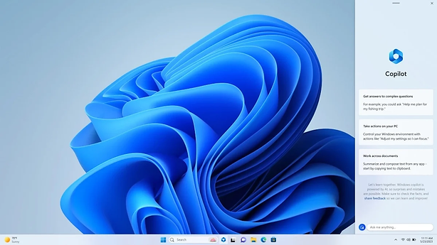

Штучний інтелект
|
Штучний інтелект З Windows 11, Microsoft включив новий помічник на основі штучного інтелекту, який називається Windows Copilot. Він з’явився в червні 2023 року і може пропонувати користувачеві пропозиції на основі вмісту, який відображається на екрані . Цей помічник може допомагати користувачам планувати подорожі, знаходити дешеві авіаквитки, шукати відповідну інформацію, відповідати на запитання завдяки інтеграції з ChatGPT та багато іншого . Додатково, Microsoft планує вбудовувати деякі функції штучного інтелекту в ряд своїх програм для Windows 11, включаючи Paint, Photo і Snipping Tool. Вони зможуть автоматично розпізнавати об’єкти та людей на фотографіях, що спростить процес створення колажів та анімацій . |
|
Також за інформацією від компанії Microsoft windows 12 буде частково працювати за допомогою штучного інтелекту, що знизиться навантаження на апаратну частину, хоча вимоги до windows 12 доволі високі. |